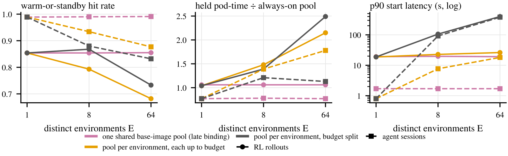

Contents · 8 sections
1What problem is it actually solving?2How it was measured3Vision workloads: where is the B300 slow?4Why these models?5LLM inference: a substantial share of the gap is the vLLM build, not the chip6Limitations I see7How a recommendation or search team could try it8VerdictSHARE
This paper measures the B200 and its upgrade, the B300, on real scientific and AI workloads, uses each card's power draw to diagnose why the newer card is slower on some tasks, and ends with a per-workload checklist for choosing between them. The B300 has more memory but is not faster on every task: the University of Chicago's Research Computing Center measured both on two eight-GPU clusters, and on convolutional network inference the B300's throughput fell as low as 1/5.6 of the B200's. Power draw shows why: on those tasks the B300 drew only 36% to 53% of its power limit, so the card was not computing at full load and the time went to the cost of each kernel. The paper names two possible sources: CPU-side kernel-launch overhead, or B300 convolution kernels that are not yet mature; on ViT-Large, where the B300 wins, both cards ran close to full power. Separately, on two B300 nodes with identical chips, time to first token was 2.1 times higher on one, only because they ran different vLLM builds. Teams buying or evaluating a new GPU generation should read it. Before buying a new card, measure it on your own workloads and your own software versions.
What problem is it actually solving?
The paper asks whether the B300 is actually faster than the B200 on the workloads a research computing center really runs, and, where it is slower, what makes it slow; its core move is to use each card's power draw as a diagnostic, not just as an efficiency metric. From the spec sheet alone (288 GB of HBM3e per B300 card against the B200's 192 GB, and a power limit raised from 1000 W to 1100 W), it is easy to treat the B300 as a drop-in replacement for the B200.
An illustrative case shows why throughput alone is not enough. A team runs its model on a new card and gets one third of the old card's throughput:
| Possible cause (illustrative) | What the card is busy with | What power does |
|---|---|---|
| Not enough compute or memory bandwidth | Computing all the time, just slowly | Near the power limit |
| The host cannot feed data fast enough | Waiting for input | Low |
| Kernels launch slowly or are poorly implemented | Idling between kernels | Low |
The throughput number is the same in all three cases, but power is not. A card that works hard and still loses runs at its power limit; a card that spends most of its time waiting uses only a fraction of it. So power separates "not enough compute" from "not computing".
How it was measured
Tests ran on two independently managed eight-GPU clusters, one from Lenovo and one from Schmidt Sciences, each with B200 and B300 nodes; A40, A100, H100 and H200 serve as references, drawn from the center's prior-generation cluster. Both clusters used the same CUDA 13.2, PyTorch 2.9.0 and cuDNN 9.15. The workloads fall into three groups:
| Workload | Content | Repetitions |
|---|---|---|
| Vision | Inference with ResNet-50, EfficientNet-B4, ViT-Large and ConvNeXt-Base, plus multi-GPU training of ResNet-50 and ViT-Large | Single timed run, spot checks show 2% to 4% variation |
| LLM inference | vLLM serving Llama-3-8B and 70B on 150 prompts of varied length, generating up to 256 tokens | Single timed run |
| Scientific computing | Training of Pangu-Weather, a 3D vision Transformer weather model, and six scientific codes (molecular dynamics, quantum chemistry and others) | Median of five runs |
Two design choices make the diagnosis work. First, the vision inputs are placed in GPU memory once and reused, so reading images from disk, decoding them and copying them to the GPU never happen inside the timed region, and "the host cannot feed data" is ruled out directly. Second, power is sampled through NVML (NVIDIA's management interface for reading GPU state) 20 times per second, averaged over the timed region and converted to a share of the power limit. Each test was run on both clusters. The chips and the CUDA, PyTorch and cuDNN versions match. Results that agree only show the limit does not change with the host; it may come from the chip or from software both share, such as cuDNN. Where results disagree, the next step is to check what differs between the two setups, which for LLM inference turned out to be the vLLM build. Hoot says

The diagnosis rests on two design choices. Vision inputs sit in GPU memory and are reused, so no disk reads, decoding or copies fall inside the timing, which rules out 'the host cannot feed data' first. Then every test runs on two independently managed clusters. Their chips and CUDA, PyTorch and cuDNN versions match, so when results agree, only what differs between the two is ruled out; when they disagree, the answer lies in what differs. Source: paper §3 measurement setup
Vision workloads: where is the B300 slow?
In eight-GPU BF16 inference, the B200 is 3.1 times faster than the B300 on ResNet-50 (the B300 reaches 0.32 of its throughput) and 5.6 times faster on ConvNeXt-Base; the B300 is close to the B200 on EfficientNet-B4 and wins only on ViT-Large, by 21%. Training repeats the same pattern, so this is not a quirk of the inference code path.
Add power and the pattern becomes clear (Table I of the paper, Lenovo cluster, eight GPUs, BF16, best-throughput configuration per model):
| Model | B200 power share of limit | B300 power share of limit | B300 throughput / B200 throughput |
|---|---|---|---|
| ViT-Large inference | 97% | 95% | 1.21 |
| EfficientNet-B4 inference | 65% | 57% | 0.85 |
| ResNet-50 inference | 80% | 53% | 0.32 |
| ConvNeXt-Base inference | 76% | 36% | 0.18 |
| ViT-Large training | 93% | 92% | 1.16 |
| ResNet-50 training | 58% | 46% | 0.34 |
Broadly, the less power the B300 draws, the slower it is relative to the B200. The one small inversion is between the ResNet-50 training and inference points (46% vs 53% power, 0.34 vs 0.32 relative throughput), a gap comparable to measurement noise. The card is not straining to compute; the time goes to per-kernel cost. Low power alone cannot tell idling between kernels from a single kernel that underuses the hardware, and the two observations below and the two candidate causes in the next section narrow this down.

Two more observations constrain the possible explanations. First, the B300's deficit persists from small batches to large ones; if the problem were a fixed cost per batch, the gap would shrink as batches grow. Second, the two B300 nodes agree within 0.1% on every vision model, while the two B200 nodes differ by up to 14%. The B300 is pinned to the same throughput across both host configurations, so whatever limits it is not in what differs between the hosts; the CPU-side kernel launch path both share remains a candidate.
Why these models?
Two candidate causes remain. One is the CPU cost of launching kernels: each step of ResNet-50 and ConvNeXt-Base launches many small convolution kernels, while ViT-Large is dominated by a few large matrix multiplications. The other is that cuDNN's convolution kernels for the B300's chip generation (sm_103) are still immature. The paper leans toward immature cuDNN sm_103 convolution kernels, because cuDNN autotuning was off during the tests, so convolution algorithms were chosen by cuDNN's built-in heuristics, which are usually the last part tuned for a new architecture. But the authors state plainly that their data cannot tell the two apart, and they name the experiment that could: capture the forward pass as a CUDA graph, which nearly removes per-launch cost. If the deficit remains, launch overhead is ruled out; if it disappears, launch overhead is confirmed.
The paper's most useful inference is that kernel granularity, not model family, decides the B300's speed. The 3D vision Transformer is a Transformer, yet it trains about 8 times slower on the B300, and a diffusion model training job unrelated to vision (Gen-COMPAS) runs 3.2 times slower on the B300 than even on an A100. What they share with ResNet-50 is not the network type: each step launches many small kernels, and no single operation is large enough to saturate the card. EfficientNet-B4 is a convolutional network, yet it lands in the middle (0.85 throughput, 57% power), because its structure launches fewer, larger kernels. What decides speed is kernel granularity, not which family the model belongs to.
LLM inference: a substantial share of the gap is the vLLM build, not the chip
With eight GPUs on Llama-3-8B, the B200 on the Lenovo cluster beats the B300 by 16% (24.2K vs 20.9K tokens per second); on 70B the B200 leads by 24% to 27%.
The most telling comparison is between the two B300 nodes. Their chips are identical, but the Lenovo node ran a development build of vLLM and the Schmidt node ran a release build (the hosts also differ in CPU thread allocation; the paper attributes the gap to the vLLM build). The Lenovo node's time to first token was 2.1 times higher on 8B and 1.6 times higher on 70B. The paper also reports different FP8 gains on the two nodes, but its percentages for this are defined inconsistently in the text, so they are not cited here. The paper attributes the latency gap to weaker CUDA graph compilation for sm_103 in the development build, but reports no control that fixes the host and switches only the vLLM version, so this attribution is not isolated. Had only the Lenovo node been tested, these gaps would have been blamed on the chip.
![Figure 5 of the paper: throughput on the left, time to first token on the right, with the number of GPUs used for tensor parallelism on the horizontal axis. Red is Lenovo, blue is Schmidt; solid lines are B200, dashed lines are B300; squares are 70B, circles are 8B. The figure is BF16. Look at the red dashed squares in the right panel: the Lenovo B300 on 70B has a higher time to first token than the Schmidt B300 with the same chip (blue dashed squares) at every GPU count, with the widest gap at eight GPUs.](../../../figs/2026-11-03/infra/2610.41919/A3_llm.png)
Another software effect that is easy to mistake for hardware: on 70B, the B200 runs FP16 slower than BF16, with no gap on one GPU, growing to 28% on eight. BF16 and FP16 have the same tensor core throughput on this generation, so the paper concludes the FP16 path picks a worse communication or attention implementation under tensor parallelism.
One sentence on scientific computing: the B300's double-precision compute is weak, so the main kernel of the quantum chemistry code Quantum ESPRESSO runs 16 times slower on the B300 than on the B200, while on the single-precision molecular dynamics code GROMACS the two cards are within 1%.
Limitations I see
First, the core diagnosis rests on single runs, as the authors themselves acknowledge. Table I comes from one run each, with 2% to 4% variation in the authors' spot checks. The main gaps of 3 to 16 times are unaffected by that noise, but precision differences under 4% are not interpreted, by the authors' own choice.
Second, the cause is not finally confirmed. The paper does not run the CUDA graph experiment that would separate launch overhead from immature cuDNN kernels. For a buyer the difference matters: if cuDNN is the cause, a software update may close the gap; if launch overhead is, the model's execution has to change.
Third, kernel granularity is inferred from model structure. Which models launch many small kernels is reasoned from the network design, not measured with an nsys timeline of kernel durations and gaps, which the authors name as an experiment that would settle it directly.
Fourth, power is sampled on one card. Each eight-GPU node read power only from GPU 0, and the other seven are assumed similar, which the paper does not check directly. The vision tests also deliberately exclude a real data input pipeline, so a deployment that reads images from storage may hit other bottlenecks.
How a recommendation or search team could try it
Ranking models in recommendation and search are often built from many small operators, so I expect them to fall on the fragmented-kernel side, which makes the paper's method directly usable:
- Run one training or inference step of your own model on the candidate card, and record throughput together with each GPU's power as a share of its limit. Low throughput with low power means the card is idling.
- Capture the forward pass with a CUDA graph and measure again. A CUDA graph records the same sequence of kernels and replays it in one launch, leaving the kernels themselves unchanged, so if the deficit disappears the problem is kernel launch cost; then try ways to cut the kernel count, such as operator fusion.
- Pin and record the whole software stack (driver, CUDA, cuDNN, vLLM or your inference engine), and ideally measure in two independent environments, so a software version gap is not mistaken for a hardware gap.
- Following Table II of the paper (which gives each workload class a "prefer B200" or "prefer B300" call with its throughput ratio), reach a separate conclusion for each kind of workload instead of deciding a whole purchase on one average.
Verdict
The key lesson: to judge whether a new card is faster, look at throughput and power together, and treat the software version as a variable as important as the chip.
| Dimension | Assessment |
|---|---|
| Problem importance | Medium-high. The B300 is a current purchasing option, and the spec sheet does not show which workloads it slows down |
| Novelty | Medium. No new algorithm; what is new is using power to separate "losing while busy" from "losing while idle", and using two clusters to separate software from chip effects |
| Evidence | Medium. It covers vision, LLMs and scientific computing, with two clusters cross-checking each other; but vision and LLM results are single runs, and the cause is not confirmed with the CUDA graph experiment |
| Engineering cost | Low. Power can be read through NVML, and the benchmark scripts and raw data are public |
| Worth trying | Yes. Adding a power column when evaluating a new card costs almost nothing and quickly shows whether the card is working at full load; controlled experiments such as CUDA graph capture and a pinned software stack then narrow down the cause |
How did this read for you?
Hoot made a note. Thanks for the feedback.
One tap, no sign-in; tap again to undo. Only anonymous counts are kept, never who you are.
Related papersMore from Paper Daily
 Infra · 2026-10-26Advancing Generative Recommendation Inference: our collaboration with NVIDIA on TensorRT LLMBy moving generative podcast recommendation off two separate inference engines and onto TensorRT-LLM together with NVIDIA, Spotify cut beam search cost by up to 54% and scoring cost by up to 7% on Qwen3-1.7B. Spotify recommends with semantic IDs, and a single online request needs three kinds of inference: beam search to generate candidates, scoring a given batch of candidates, and inserting the u…
Infra · 2026-10-26Advancing Generative Recommendation Inference: our collaboration with NVIDIA on TensorRT LLMBy moving generative podcast recommendation off two separate inference engines and onto TensorRT-LLM together with NVIDIA, Spotify cut beam search cost by up to 54% and scoring cost by up to 7% on Qwen3-1.7B. Spotify recommends with semantic IDs, and a single online request needs three kinds of inference: beam search to generate candidates, scoring a given batch of candidates, and inserting the u…
Infra · 2026-11-11Firepool: Brokering Warm GPU Capacity for Agentic and RL Workloads at LinkedInAgents and RL training issue thousands of GPU jobs that run for seconds, yet starting a Pod takes twenty to thirty seconds even with the image cached, so waiting outweighs the work. Common fixes each miss something: caching images does not remove scheduling and initialization, a persistent Ray cluster holds GPUs idle between steps, and a warm pool of ready Pods often goes unused because the next… Infra · 2026-11-03HiState: Hierarchical Prefix Cache Management for Hybrid LLM Serving in Agentic WorkloadsThe recurrent layers of a hybrid model compress the whole prefix into a fixed-size snapshot, and it cannot be cut back to an earlier position. So even when the KV is still cached, if the snapshot at the match point was never saved or has already been evicted, a long stretch must be recomputed from an earlier snapshot, or from scratch. HiState exploits an asymmetry: a cache hit reads every matchin…
Infra · 2026-11-03HiState: Hierarchical Prefix Cache Management for Hybrid LLM Serving in Agentic WorkloadsThe recurrent layers of a hybrid model compress the whole prefix into a fixed-size snapshot, and it cannot be cut back to an earlier position. So even when the KV is still cached, if the snapshot at the match point was never saved or has already been evicted, a long stretch must be recomputed from an earlier snapshot, or from scratch. HiState exploits an asymmetry: a cache hit reads every matchin… Infra · 2026-11-02ConfluxServe: Reconciling Resource Utilization and Parallelism Efficiency across Prefill and Decode in LLM ServingIn LLM serving, running prefill and decode together lets their resource needs complement each other, since prefill uses compute and decode uses memory bandwidth. But the two want different parallelism. A long-prompt prefill must spread across more GPUs to deliver the first token on time, while decode needs only a few. ConfluxServe treats each operator differently. In the linear layers, tokens fro…
Infra · 2026-11-02ConfluxServe: Reconciling Resource Utilization and Parallelism Efficiency across Prefill and Decode in LLM ServingIn LLM serving, running prefill and decode together lets their resource needs complement each other, since prefill uses compute and decode uses memory bandwidth. But the two want different parallelism. A long-prompt prefill must spread across more GPUs to deliver the first token on time, while decode needs only a few. ConfluxServe treats each operator differently. In the linear layers, tokens fro…
Discussion
Add experiment details, reproduction notes or a different take. Requires a GitHub sign-in.
Loading the discussion…